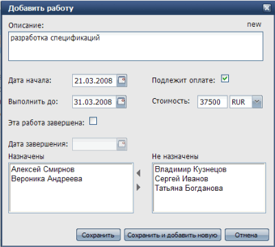

|
WebAsyst Проекты одним взглядом
Так выглядит главное окно сервиса WebAsyst Проекты:
- Выбор проекта: Щелкните, чтобы открыть выпадающий список доступных проектов и выбрать проект, с которым вы хотите работать.
- Панель инструментов: Щелкните по кнопке (Проект, Работа, Вид, Отчеты) чтобы открыть выпадающее меню для доступа к функциям добавления/изменения проекта, добавления работ, настройки вида и т.д.
- Список работ: Показывает работы текущего проекта. Список можно сортировать щелчком по заголовку колонки и настраивать видимые колонки.
- Значок редактирования: Щелкните по значку "карандаш" чтобы открыть форму "Изменить работу" для изменения дат начала/окончания работы, описания, назначений и т.д.
- Редактирование "по месту": Двойной щелчок в списке работ позволяет редактировать описание и даты прямо в списке, без использования формы "Изменить работу".
- Диаграмма Ганта: Графическое представление плана проекта, в котором цветные полоски показывают продолжительность работы от даты начала, до даты планового/фактического завершения.
- Закладка Файлы: Хранилище файлов, связанных с текущим проектом. Позволяет добавлять файлы к проекту, раскладывать файлы по папкам, представлять доступ к файлам другим участникам проекта.
|
|
|
Создание нового проекта
Щелкните Проект -> Добавить в панели инструментов. В форме "Добавить проект" введите описание проекта, выберите заказчика и менеджера проекта из списка пользователей.
Если это проект для нового заказчика, то вы сперва должны добавить этого заказчика используя Проект -> Список заказчиков.
Включите флажок Подлежит оплате, если данный проект оплачивается вашим заказчиком. Укажите Дату начала проекта и нажмите кнопку Сохранить. Добавленный проект станет текущим и откроется в главном окне, где вы сможете начать добавление работ.
ПРИМЕЧАНИЕ: Доступ к функции добавления проекта, списку проектов и списку заказчиков настраиваемый. Вы должны иметь доступ к секции Пользователи, чтобы настроить права доступа для себя или других пользователей. |
|
|
Добавление работ в проект
- Выберите в панели инструментов Работа -> Добавить.

- Введите краткое Описание работы.
- Дата начала и плановая дата завершения (Выполнить до) - необязательные поля. Например, вы можете заполнить только дату Выполнить до, указав таким образом веху (milestone), или ключевую дату в своем проекте.
- Если вы добавляете работу, которая уже завершена, то щелкните флажок "Эта работа завершена" и введите дату в поле Дата завершения.
- Включите флаг Подлежит оплате и укажите Стоимость, если данная работа оплачивается заказчиком вашего проекта..
- Назначьте персонал ответственный за выполнение данной работы. Вы можете выбрать назначения только из списка существующих пользователей системы. Для выбора нескольких пользователей одновременно удерживайте клавиши Ctrl и Shift на вашей клавиатуре, и щелкайте по именам, затем нажмите кнопку (левая стрелка), чтобы перенести выбранных пользователей в список Назначены.
- Щелкните кнопку Сохранить для добавления работы и возвращения в список, или используйте Сохранить и добавить новую чтобы остаться в форме "Добавить работу" для добавления следующей записи.
|
|
|
Импорт работ из буфера обмена или файла
Есть быстрый способ добавить сразу много работ в проект используя Работа -> Импорт. В форме Импорт заполните вручную или скопируйте из буфера обмена список работ в специальную текстовую область. Вы можете также импортировать работы из текстового файла формата CSV (Comma Separated Values).
Каждая работа в подготовленном для импорта списке должна занимать отдельную строку. Все строки должны быть одинакового формата и состоять из колонок, разделенных знаком табуляции, точкой с запятой (;) или запятой (,) без пробелов.
Колонки, возможные для импорта:
- Описание
- Дата начала
- Выполнить до
- Дата завершения
- Подлежит оплате
- Стоимость
- Валюта
- Назначены
Содержимое каждой колонки может быть заключено в кавычки. Если вы хотите использовать кавычки внутри описания работы, то нужно заключить в кавычки весь текст описания, и перед каждым внутренним знаком кавычки ставить дополнительную кавычку.
Пример: "описание с ""внутренними"" кавычками"
Для импорта назначений, заключите в кавычки содежимое колонки Назначены и разделите идентификаторы пользователей запятой без пробелов. Регистр написания ИД пользователя не имеет значения.
Ниже приведен пример списка работ, подготовленный для импорта, который состоит из колонок описания, даты начала и назначений, разделенных точкой с запятой:
- работа 1; 05.04.2008; “ALEX,tanya,SERG”
- работа 2; 15.04.2008; “SERG”
- работа 3; 17.04.2008; “TANYA, alex”
|
|
|
Предоставление доступа к проекту другим пользователям
Вы можете управлять вашим проектом совместно с другими пользователями. В зависимости от роли пользователя в проекте, вы можете дать один из следующих уровней прав доступа:
- Чтение (Ч) — пользователь может просматривать проекты и работы
- Запись (З) — пользователь может добавлять/изменять работы в этом проекте
- Полные (П) — пользователь может добавлять/изменять работы, проект и права доступа к проекту
Менеджер проекта всегда имеет полные права доступа в проекте.
Для предоставления доступа другим, щелкните Проект -> Настроить права доступа. Вы можете настроить права индивидуально для каждого на закладке Пользователи, или использовать закладку Группы для настройки прав для групп пользователей (вы должны иметь доступ к секции Пользователи и группы, чтобы управлять группами пользователей).
При установке прав доступа применяется комбинация персональных и групповых прав, как в примере ниже:
|
Персональные права
|
Групповые права
|
Результирующие права
|
|
-
|
Чтение
|
Чтение
|
|
Чтение
|
Запись
|
Запись
|
|
Полные
|
Чтение
|
Полные
|
ПРИМЕЧАНИЕ: Настройка прав пользователей к проекту доступна только пользователям, имеющим уровень доступа «администратор» к разделу «Команда» в аккаунте WebAsyst. |
|
|
Использование списка работ
Страница со списком работ это главная рабочая область, где вы можете просматривать, добавлять и редактировать работы. Большинство операций, доступных в списке работ, описаны ниже. |
|
|
Сортировка списка работ
Щелкните по заголовку колонки, чтобы отсортировать список. Щелкните еще раз, чтобы сменить порядок сортировки. Если вы хотите сразу явно задать порядок сортировки, то наведите курсор мыши на заголовок колонки и щелкните по значку стрелки для открытия локального меню, и в нем выберите нужную сортировку. |
|
|
Выбор видимых колонок
Наведите курсор мыши на заголовок любой колонки и щелкните по значку стрелки для открытия локального меню, в котором выберите пункт Колонки. Затем установите флажок для колонок, которые вы хотите видеть в списке работ. |
|
|
Изменение места расположения колонки
Щелкните по заголовку колонки и просто потащите вправо или влево, чтобы поменять позицию колонки. Новое расположение колонок будет сохранено в cookies и применится в следующий раз, когда вы откроете список работ. |
|
|
Разбивка большого списка на страницы
Вы можете добавить неограниченное количество работ в свой проект. Список работ автоматически разбивается на страницы, не более 30 работ на каждой. Для навигации используйте стрелки перелистывания страниц внизу списка работ. |
|
|
Редактирование работ
Наведите курсор мыши на работу, которую вы хотите изменить. Щелкните по значку с "карандаш", который появится в левой колонке, чтобы открыть форму редактирования работы. Вы также можете дважды щелкнуть в колонках дат или описания, чтобы редактировать прямо в списке. |
|
|
Завершение/Возобновление работ
Вы можете пометить любую работу проекта как завершенную. Для этого откройте форму редактирования работы и включите флажок "Эта работа завершена", затем введите дату завершения. Вы также можете дважды щелкнуть в колонке Завершена в списке работ и ввести дату завершения.
Для возобновления завершенной работы достаточно очистить поле Дата завершения. |
|
|
Удаление работ
Выберите работы, которые вы хотите удалить и используйте меню Работа -> Удалить в панели инструментов. Заметьте, что удаленные работы нельзя восстановить. |
|
|
Экспорт работ
Вы можете сделать копию списка работ в обычном текстовом формате, чтобы потом вставить, например, в электронную таблицу, импортировать в другую программу управления проектами (например, MS Project) или даже использовать как шаблон для последующего импорта в ваш аккаунт WebAsyst Проекты. |
|
|
Печать списка работ
WebAsyst Проекты - это инструмент не только для экрана вашего компьютера. Щелкните значок Версия для печати над списком работ, чтобы вывести подготовленный для печати отформатированный список работ, подогнанный под ширину вашей страницы. |
|
|
Добавление файлов в проект
Щелкните по закладке Файлы, чтобы открыть секцию, на которой вы сможете добавлять файлы, связанные с данным проектом. Фактически, закладка Файлы содержит часть общего репозитария сервиса WebAsyst Файлы, которая связана с одним проектом.
Здесь вы можете загружать и скачивать файлы, создавать подпапки, организовывать файлы в папках и использовать большинство других полезных функций сервиса WebAsyst Файлы.
Права доступа ко всем папкам проектов применяются в соответствии с правами в проектах. Другими словами, вам не придется беспокоиться о настройке прав доступа для каждой папки связанной с проектами. Права доступа, которые вы настроили для проектов, будут применены к соответствующим папкам проектов.
ПРИМЕЧАНИЕ: Закладка Файлы доступна только если установлен сам сервис WebAsyst Файлы в вашем аккаунте. |
|
|
Просмотр всех назначений
Выберите Вид -> Назначения в панели инструментов, чтобы открыть список всех пользователей, назначенных на данный проект. Для каждого пользователя выводится группа работ, на которые пользователь назначен.
Это представление удобно для получения общей картины распределения персонала внутри проекта - видно кто перегружен работой, а кто свободен. В больших проектах это поможет при оптимизации распределения ресурсов и планировании. |
|
|
Изменение информации о проекте
Если вы менеджер текущего проекта, или имеете Полные права на проект, то вы можете редактировать информацию и свойства проекта, помечать проект как Завершенный или даже удалить проект. |
|
|
Редактирование проекта
Щелкните Проект -> Редактировать. Сделайте изменения и нажмите кнопку Сохранить.
Заметьте, что если вы уже имеете работы добавленные в проект, вы не сможете установить дату начала проекта ранее, чем самая ранняя из дат начала работ. Также будьте внимательны при смене менеджера проекта. Старый менеджер проекта потеряет все права доступа к этому проекту, если у него отдельно не назначены Полные права. |
|
|
Завершение/Возобновление проекта
Щелкните Проект -> Закрыть, укажите дату завершения проекта и решите что делать с открытыми работами (если они есть) этого проекта (доступные варианты: 1. оставить работы открытыми и 2. закрыть все открытые работы). Завершенный проект получает статус "только для чтения", т.е. вы не сможете более добавлять/редактировать работы и менять свойства этого проекта.
Чтобы возобновить завершенный проект, выберите пункт меню Проект -> Возобновить. |
|
|
Удаление проекта
Щелкните Проект -> Удалить чтобы удалить проект и все связанные с ним работы без возможности восстановления. |
|
|
Управление списком заказчиков
Щелкните Проект -> Список заказчиков, чтобы открыть полный список заказчиков. Наиболее часто используемые операции, доступные в Списке заказчиков, описаны ниже.
ПРИМЕЧАНИЕ: Доступ к Списку заказчиков настраиваемый. Вы должны иметь доступ к секции Пользователи, чтобы настроить права доступа себе и другим пользователям аккаунта. |
|
|
Добавление/Редактирование заказчика
В Списке заказчиков щелкните Заказчик -> Добавить и введите название заказчика, адрес, контактную информацию и нажмите кнопку Сохранить. Новый заказчик появится в списке. Для изменения информации о заказчике, просто щелкните по нему в списке, чтобы открыть форму Информация о заказчике.
Заказчик может иметь статус Активен или Не активен. Вновь добавленный заказчик всегда получает статус Активен. Все активные заказчики доступны для выбора в форме добавления/редактирования проекта.
Если вы не собираетесь более работать с каким-либо заказчиком, но хотите сохранить информацию о нем, то вы можете изменить его статус на Неактивный. Для этого, выберите заказчика в списке и щелкните Заказчик -> Инактивировать.
Чтобы вновь вернуть заказчику активный статус, выберите его в списке и щелкните Заказчик -> Активировать. |
|
|
Импорт списка заказчиков
Есть быстрый способ добавить сразу много заказчиков из текстового файла CSV (Comma Separated Values).
Каждая запись в импортируемом файле должна занимать отдельную строку. Все строки должны быть одинакового формата и содержать одинаковое количество колонок разделенных знаком табуляции, точкой с запятой (;) или запятой (,) без пробелов.
Щелкните Заказчик -> Импорт, выберите файл и нажмите Продолжить. На следующем шаге вам будет предложено расставить соответствие между колонками в файле и в формате записи о заказчике. Включите флажок "Импорт первой строки", если первая строка в файле также содержит запись о заказчика, а не заголовки колонок. |
|
|
Отчеты
Щелкните кнопку Отчеты в панели инструментов, чтобы выполнить один из следующих отчетов:
Статистика работ: для каждого проекта показывать количество работ всего, а также количество открытых, завершенных и просроченных работ.
Оценочная стоимость: для каждого проекта показывает суммарную стоимость, а также стоимость открытых, завершенных и просроченных работ. |
|